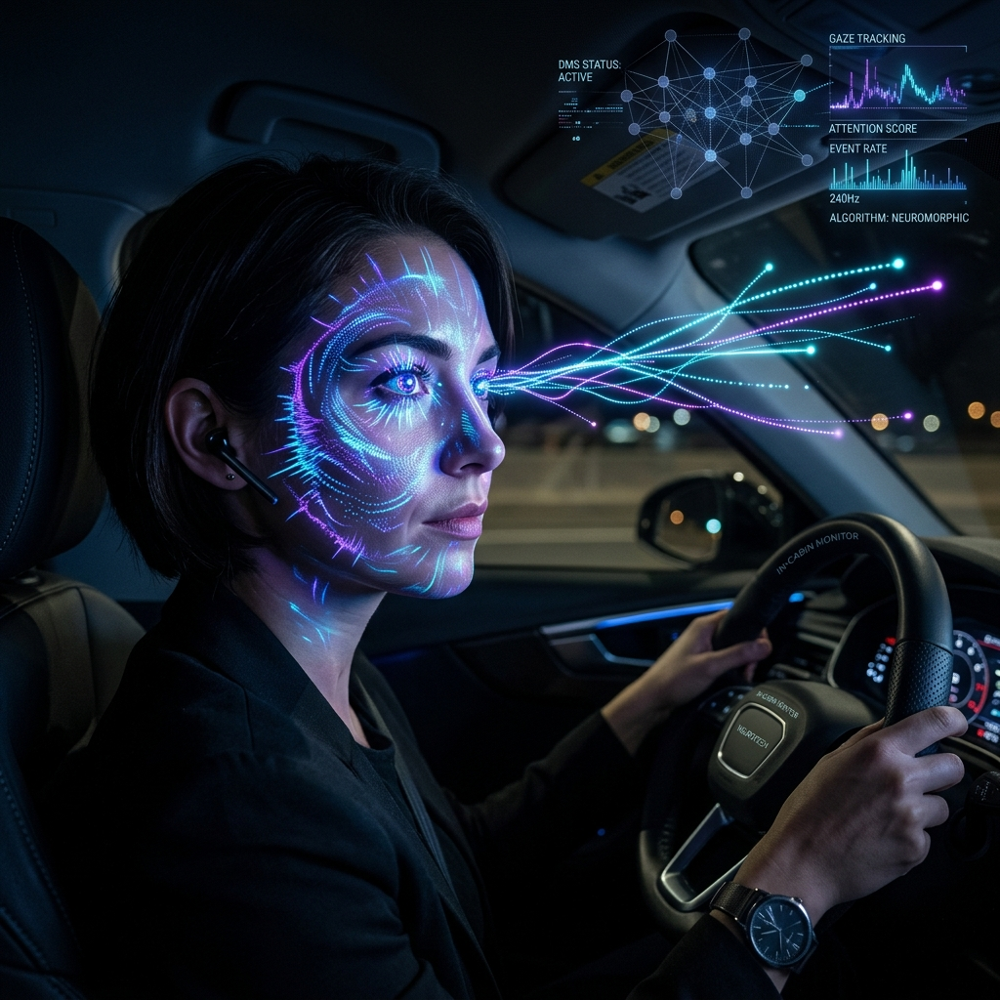

NeuroGuard combines neuromorphic event cameras with biologically-inspired spiking neural networks to detect driver fatigue in real-time — with microsecond latency, ultra-low power consumption, and unprecedented accuracy.

Traditional camera-based systems struggle with latency, lighting, and power constraints. We built something better.
A biologically-inspired pipeline from raw events to drowsiness classification.
A Dynamic Vision Sensor (DVS) captures per-pixel brightness changes as asynchronous events (x, y, t, p) with microsecond timestamps — no frames, no redundancy.
Raw events are aggregated into temporal voxel grids with 5 time bins, producing spatiotemporal tensors that preserve the rich temporal structure of the event stream.
Two convolutional layers with LIF (Leaky Integrate-and-Fire) neurons process the voxel grid. Neurons fire only when needed — massively reducing computation vs. traditional CNNs.
An LSTM models temporal dynamics across frames while a soft-attention mechanism pinpoints the most informative time steps — focusing on blinks, head nods, and micro-sleeps.
A fully-connected head outputs a binary prediction: ALERT 🙂 or DROWSY 😴. Class weights (0.3/0.7) correct for dataset imbalance, boosting recall for drowsy states.
[B, T, 5, H, W]Conv→BN→LIF→Pool ×28192→256Linear(256,1)+SoftmaxLinear(256,2)ALERT / DROWSYUse your webcam for real-time drowsiness detection or explore the interactive simulation below.
Trained and evaluated on the Driver Monitoring Dataset (DMD) from Vicomtech — a large-scale, multi-modal dataset for driver behaviour analysis.
NeuroGuard outperforms frame-based deep learning baselines on accuracy, latency, and energy efficiency.
| Method | Accuracy | Latency | Power |
|---|---|---|---|
| ResNet-18 (Frame) | 94.1% | 18ms | 12W |
| LSTM + CNN | 95.8% | 22ms | 15W |
| 3D-CNN | 96.2% | 35ms | 20W |
| NeuroGuard (Ours) ⭐ | 98.4% | 1.2ms | 1.8W |
A student research team working at the intersection of neuromorphic computing and road safety.
@article{neuroguard2025,
title = {NeuroGuard: Neuromorphic Driver Drowsiness Detection
via Spiking Neural Networks and Event Cameras},
author = {Aadya and Anurag Kumar},
journal = {arXiv preprint},
year = {2025},
url = {https://github.com/aadya197/neuromorphic-drive-monitoring}
}